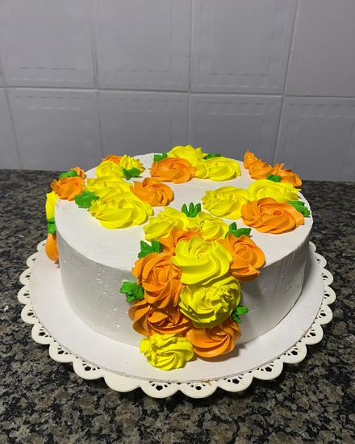
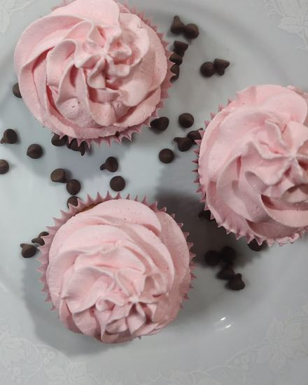
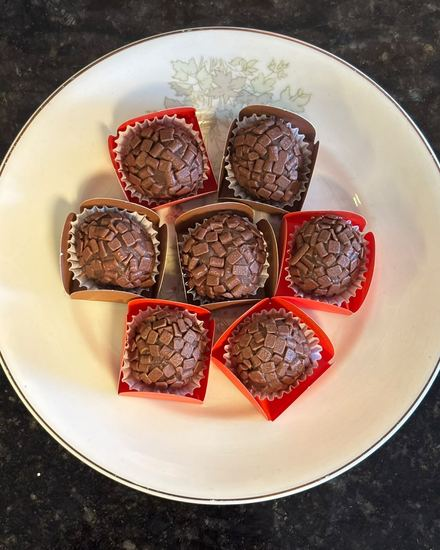
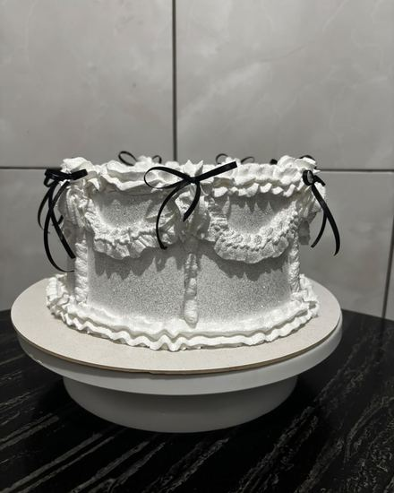
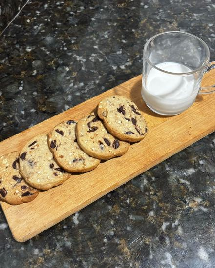
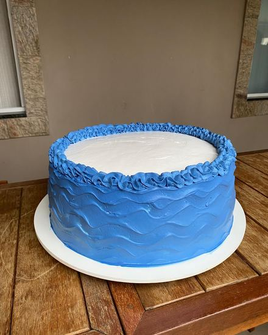
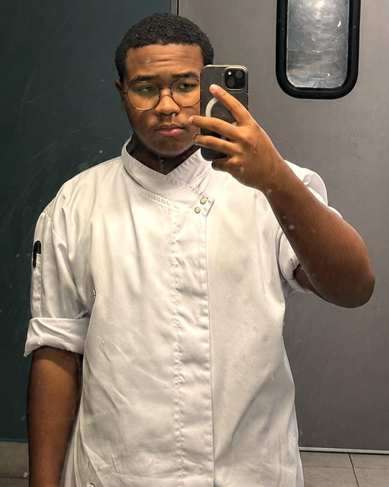

Bolos de festa
Massa, recheio e cobertura combinados no orçamento. Decoração feita à mão, flor por flor.
Confeitaria artesanal sob encomenda. Nada de prateleira, nada de estoque — cada bolo começa a existir depois que você pede.
Encomendas abertas para as próximas datasSabor, tamanho e decoração ajustados a cada pedido. Se não estiver na lista, pergunte — quase sempre dá.

Massa, recheio e cobertura combinados no orçamento. Decoração feita à mão, flor por flor.

Porção individual, com cobertura na manga. Boa saída para lembrança e chá.

Brigadeiro e companhia, enrolados um a um. Por cento, para festa ou presente.

Acabamento fino — laço, babado, o que a ocasião pedir.

Com gotas de chocolate, assados no dia. Melhores ainda com leite.

Cor e tema sob encomenda, do chá revelação à festa infantil.
Da primeira mensagem até o doce na sua mão.
Data, ocasião, quantas pessoas e o que tem em mente. Foto de referência ajuda bastante — e me procure com uma semana de folga.
Volto com sabores, tamanho, valor e prazo. Ajustamos até fechar do seu jeito.
Fechado o valor, sua data entra na agenda. O pagamento é por Pix.
Fica pronto no dia combinado. Retirada sem custo, ou entrega com taxa combinada no orçamento.

A Le Casadio começou em 2022, no Rio de Janeiro, com uma ideia simples: fazer doce bem feito e em pouca quantidade — do jeito que dá para cuidar de cada um.
Nada é produzido para estoque. Cada bolo é montado depois que você pede, com a massa feita no dia e o recheio escolhido junto com você. É por isso que a agenda tem limite: prefiro fazer menos e entregar melhor.
A massa é a parte que mais me elogiam — e é onde eu menos economizo.
Ver o trabalho no InstagramAs respostas que mais aparecem no WhatsApp.
Uma semana. Datas comemorativas costumam fechar a agenda antes disso — se a sua é numa data concorrida, vale falar comigo com mais folga.
Entrego, com taxa — o valor entra no orçamento, junto com o resto. Se preferir, também dá para retirar comigo, sem custo nenhum.
Por Pix.
Para encomenda, não. Pode ser um bolo só, meia dúzia de cupcake, o que você precisar. O mínimo só existe quando estou vendendo na hora, para retirada.
Ainda não. Prefiro dizer isso agora a te deixar descobrir depois.
Depende do que você quer — tamanho, recheio, decoração e a data mudam o preço, e eu prefiro te dar um número certo a um chute. Me conta o que tem em mente que eu volto com o orçamento fechado.
Pode. É esse o ponto da encomenda: você manda uma referência ou descreve o que imagina, e o bolo é montado em cima disso. Recheio, cobertura, cor e tamanho entram na conversa do orçamento.
Me conta a ocasião e o que você imagina. Respondo com orçamento, sabores e prazo.
Chamar no WhatsApp Resposta no mesmo dia — atendo até as 18h, e até meio-dia aos domingos.